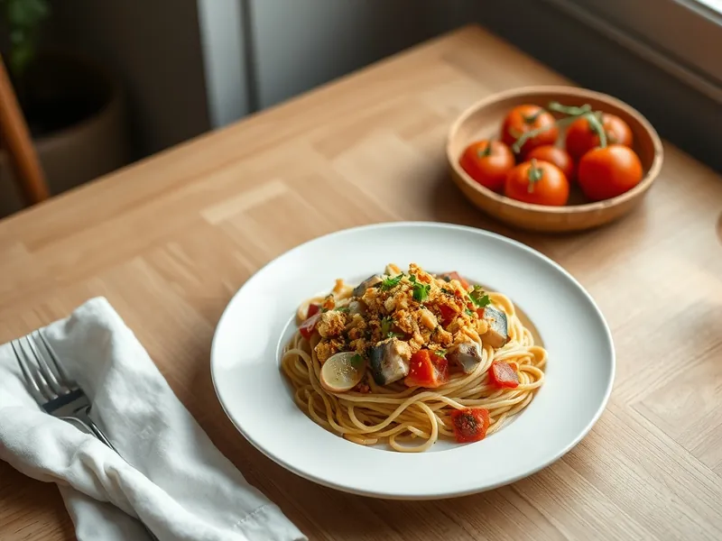

Паста с сардинами и помидорами
Спагетти с консервированными сардинами, чесноком, помидорами и хрустящими сухарями
20 мин2 порц.705 ккал на порциюБ 41 · Ж 26 · У 76Итальянская кухня
Открыть в приложении: порции, таймеры, список покупок
Продукты на 2 порц.
- Макароны200 г
- Сардины в масле1 шт
- Помидоры2 шт
- Чеснок2 зуб.
- Оливковое масло1 ст. л.
- Лимон0,3 шт
- Соль1 щеп.
- Петрушка по желаниюпо вкусу
- Панировочные сухари по желанию2 ст. л.
- Острый перец молотый по желанию1 щеп.
Как готовить
- Отварите спагетти в подсоленной воде 9-10 минут до al dente. Перед тем как слить, отберите 100 мл воды от варки.
- Помидоры нарежьте кубиком, чеснок пластинками. Сардины выложите из банки и разломите вилкой на крупные кусочки, масло из банки сохраните.
- Если используете сухари, обжарьте их на сухой сковороде на среднем огне 2 минуты до золотистого цвета и пересыпьте в мисочку.
- В той же сковороде прогрейте оливковое масло и 1 ст. л. масла из банки на среднем огне, обжарьте чеснок 1 минуту, добавьте помидоры и готовьте 5 минут, пока они не размякнут и не пустят сок.
- Добавьте сардины и прогрейте 2 минуты, аккуратно помешивая. Выложите спагетти, перемешайте, при необходимости влейте немного воды от варки и сбрызните лимонным соком.
- Разложите по тарелкам и посыпьте петрушкой, острым перцем и сухарями.
Совет. Сардины солёные, поэтому соус почти не солите и попробуйте его уже после того, как добавите рыбу.